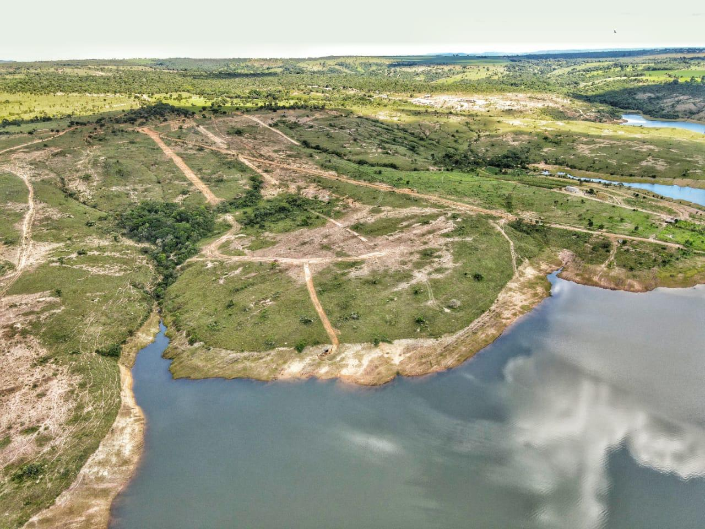
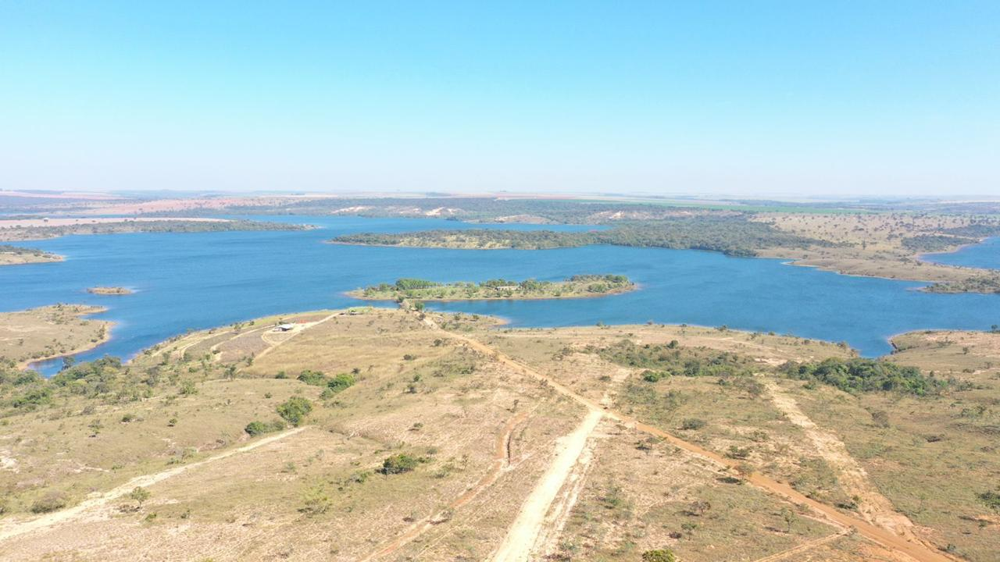

O projeto
O Mirantes do Lago é um loteamento na beira do reservatório de Queimado, em Palmital de Minas (MG), a uns 120 km de Brasília. Os lotes ficam no continente, e a ilha que dá nome ao lugar fica no lago, bem na frente.
O site tem hero em tela cheia, um mapa 3D dos lotes em Three.js e animação de scroll com GSAP. Está no ar na Vercel.
mapa 3D
como base
inventados

O que precisava
ser resolvido
Quem compra lote de outra cidade não tem como visitar o terreno toda hora, e planta em PDF não ajuda muito a entender onde fica cada lote.
A primeira versão do mapa 3D era genérica e ainda inventava preço e status dos lotes com Math.random(). Aparecia "Reservado, R$ 305.000" num lote que ninguém tinha reservado. Pra um loteamento, isso é pior que não ter mapa.

Como foi
construído
Refiz o mapa em cima da planta do cartório: orla, ruas, áreas verdes, guarita e os 83 lotes, com a ilha na frente. Dá pra girar e aproximar com OrbitControls, e cada lote mostra área e status.
Os dados dos lotes saíram do código e foram pra um arquivo só (lotes-data.js), onde o dono marca disponível, reservado ou vendido. Hoje tudo aparece como disponível e nenhum preço é inventado.
O formulário já monta a mensagem pro WhatsApp do corretor, com o número vindo de um config.js central. Também entraram headers de segurança na Vercel, SRI nos scripts do Three.js, favicons, Schema.org, Open Graph e sitemap.
Tecnologias

O que
foi entregue
O site está no ar numa URL da Vercel enquanto o domínio próprio não fica pronto. Falta o dono mandar o WhatsApp do corretor e o status real de cada lote.
↳ Quer um site assim?